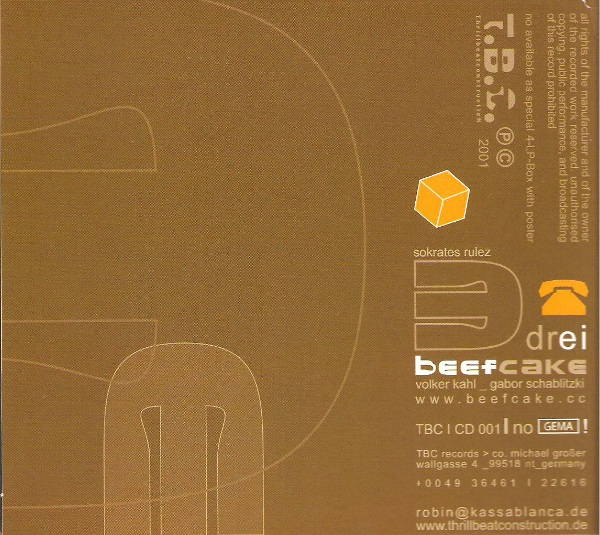

BLOG & SOUNDS
music, πειραματικά, suggestions...
about
articles
articles
Haujobb – Solutions For A Small Planet
Power electronics, complex idm rhythms and ambient moments. Haujobb's abstract lyrics derive from the new technologies, the net and the resulting social relationships.
Sep 30, 2014
Sons Of Melancholia – Beauty Is Imperfection
Sequences, pads and abstract techno bleeps with lots of delays. A tensed and blue feel throughout its content.
Sep 30, 2014
Night is our time - mixtape
A mixtape, for our 1st year's anniversary.
Aug 21, 2014
Ricardo Donoso – As Iron Sharpens Iron, One Verse Sharpens Another
Donoso’s synthetic and down-techno music delivers a scenery constructed steadily with sequences dark and tensed.
Aug 13, 2014
Bogmon – A Scream in the Void
Dark with complex and strong rhythms that constitute the solid structure of each track. Sounds and bass layers come and go, decorating masterfully the downtempo and technoish feel of most tracks.
Jul 23, 2014
Lofeye – The Road is a River
“The Road is a River” is an experimental world themed album by Lofeye. It is filled with samples from folk riffs and voices with a techno(ish) beat and feel.
Jun 23, 2014
Flaque – Mindscapes
Flaque makes his distinction by building beautiful soundscapes, delayed and airy sequenced melodies, and by manipulating kattoo-styled beats and rythms
Jun 2, 2014
Loess - Burrows
Ambient and downtempo with dystopian sequences, broken melodies and glitch hip hop beats, could vaguely describe what should be expected from this release.
May 17, 2014
r.roo - mgnovenie
Neo-classical and minimal–ambient with rhythm beats from classic idm-style to techno and dubstie
May 1, 2014
Undermathic - Return to Childhood
Melodic, rhythmic – sampled, industrial/idm with a taste of post-rock and sequenced ambience
Apr 16, 2014
Scanone - Scenes
Scenes” is like a collection with the most distinctive tracks of a full length album. Electro – glitch is Scanone’s main approach, but idm-focused and dub(ier) tracks come along.
Mar 31, 2014
Senking - Pong
Dark and ambient deep bass on a slow dupstep mode. Keys in chords on a downtempo mood.
Mar 14, 2014
Subheim - Approach
Experimental beats with cinematic and downtempo feel. Dark and deeply melodic sounds with female vocals.
Feb 28, 2014
Hecq - 0000
Ambient – modern classical, abstract – idm and industrial focused on micro-manipulated mechanics and steady yet complex rhythm
Feb 14, 2014
Plaid - Scintilli
"Scintilli" can be described as IDM. Also a little techno, but we will go for plain experimental electronica. It is experimental not on the mechanics though, but on melodies and keys.
Jan 31, 2014
Kattoo - Megrim
Beats, break beats and mechanic hip hop rhythms with dark and cinematic symphonic compositions
Jan 17, 2014
Von Magnet - De L'Aimant
Electroflamenco. Ritual, industrial, theatrical songs and compositions.
Dec 31, 2013
Metropolis - Guardian Of The Heartmachine EP
+ 214 - Drift Diving EP
Two electro- techno EPs that will satisfy the paranoiawkward dark listener/dancer.
Dec 16, 2013
Mlada Fronta - Fe
2
O
3
Μinimal evolving soundscapes and melodies accompanied usually with rhythmic noise, break beats and great industrial dance mechanics.
Nov 29, 2013
Access To Arasaka - Oppidan
Slow-tempo, dubstly bass, beautiful melodies and atmospheres, strange mechanics with fast-paced industrial cuts, designed carefully and delivered strong
Nov 13, 2013
The Black Dog - Music For Real Airports
An ambient album with compositions strong with emotion sometimes positive and sometimes dark. Rhythm and beat accompany many arrangements and each track has a certain place in the wholeness of this concept album
Oct 31, 2013
Ocoeur - Light As A Feather
Compositions that crosses techno, electro-acoustic, down-tempo and impose the IDM veil over the album also manage to deviate from it.
Oct 17, 2013
Soul Oddity - Tone Capsule
Experimental electro - techno from the deep 90s ( apparently). We have rhythmic challenges with analogue and monotone (mostly) bubbles and bleeps creatively mixing together.
Oct 2, 2013
Ab Ovo - Mouvements
Soundscapes and power (a little soft) rhythms, medolic-utted sequences with a down-tempo (ish) feel.
Sept 16, 2013
Mnemonic - Monokultur
melodic keyboard dominate most tracks' structure and hard and complex beats build impressive rhythms. a dark, heavy yet emotional sound
Aug 29, 2013
Ginormous - the sound of love impermanent
an ambient mainly album covering modern classical and "idm" aspects that becomes lively enough to slightly bend the field of electronica
Aug 5, 2013
Frank Riggio - Noise Thinking EP
Breakbeat rhythm alongside creative use of samples. "Noise thinking" gets into a dark and aggressive theme all the way out
Aug 3, 2013

Beefcake - Drei
Ill, trip hop, break, experimental idm and orchestral stuff forging of beautiful compositions
Aug 1, 2013
load more articles
↑


 No Rights Reserved
No Rights Reserved